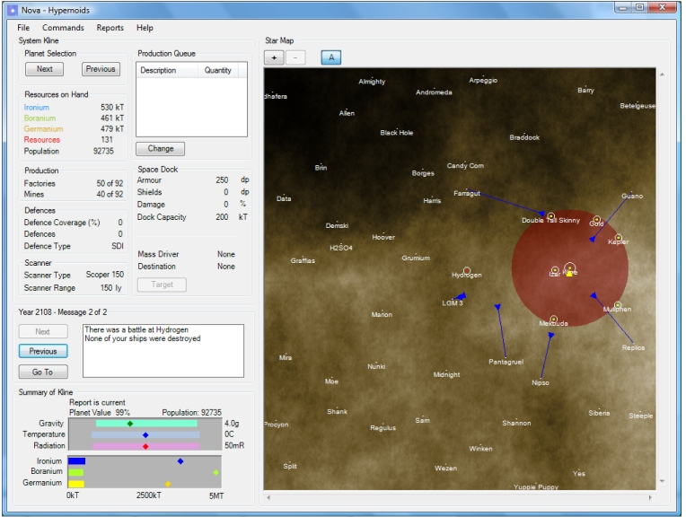
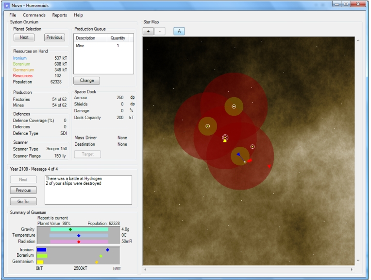
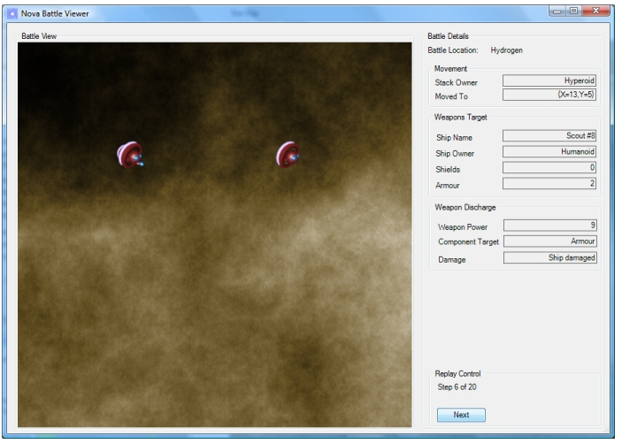

This is the main Nova main window early in a new game. As you can see it is very similar to the main Stars! screen apart from the fact that it relies on the screen area being (at least) 1024x768. The race being played is Hyper-Expansion and, indeed, at this point the race is expanding from its home planet. The race has not yet done enough research to obtain long-range scanners and only has the Bat scanner and a ship has to be in orbit to scan for ships and planet resources. This is the case for Hydrogen which has been determined to be colonised by another race. There has been a battle at Hydrogen and this race was the victor.

In the top left of the screen is the selected item detail panel. In this case it
is showing the details of the home world but it will switch to showing the details
of a fleet should one be selected.
In the middle left is the usual game message area and in the bottom left is the summary panel. Again, this is showing the summary of the home planet but will switch to a fleet summary when one is selected.
Over to the right is the star map that works exactly like the one in Stars!. However, only buttons for zooming in and out and turning on and off the star names have been implemented so far.
Next is an screen shot of the same state of the game seen from another race. This race is JOAT and has long-range and penetrating scanners and can see enemy ships approaching LGM 3. This race lost the battle at Hydrogen as is reported in the message screen.

In this view the planet names have been turned off to give a less cluttered display.
Also, note that a new button has appeared in the message panel: Go To.
If the message relates to some complex event then pressing this button will pop
up a dialog to show the details. In this example, there has been a battle at Hydrogen
so pressing the Go To button will pop up the battle visualision dialog
allowing the battle to be stepped through to see exactly what happened. Here is
an example of the battle visualisation dialog (basically working but not yet in
its final form).
